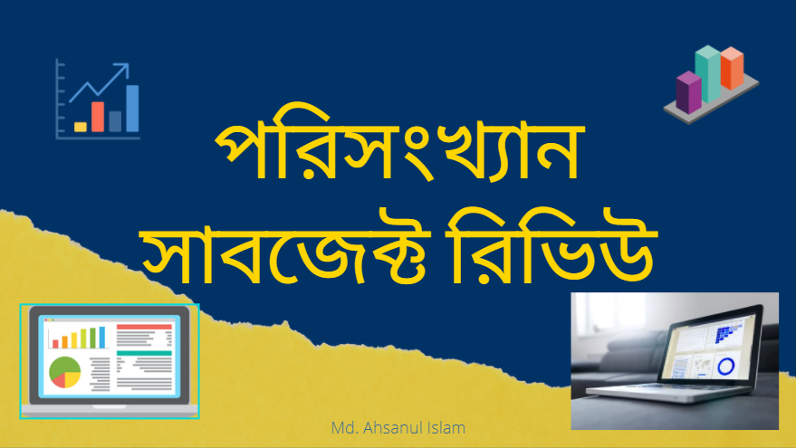

প্রথমেই যেটা জানার বিষয় সেটা হচ্ছে এটা Science এর সাবজেক্ট। স্কুল কলেজে কমার্সের সাবজেক্ট বলে পরিচিত হলেও এটা বিজ্ঞান বিভাগের বিষয়। অর্থাৎ এখান থেকে আপনি পাবেন Bachelor of Science Honours সার্টিফিকেট।

পাবলিক বিশ্ববিদ্যালয়ে যাদের সিরিয়াল মেরিটলিস্টে একটু নিচের দিকে, তাদের অনেকেই বিভিন্ন পিওর সাবজেক্ট নিয়ে থাকে। Statistics সে সকল পিওর subjects এর একটি। ব্যক্তিগতভাবে আমি মনে করি পিওর সাবজেক্ট হিসেবে অন্যান্য যেকোন সাবজেক্টের তুলনায় পরিসংখ্যানের এপ্লিকেশন, ডিমান্ড অনেক বেশী।
বেশীরভাগ স্টুডেন্টেরই এই সাবজেক্ট নিয়ে খুব একটা ধারণা নেই। সত্যি বলতে ভর্তির আগে আমি নিজেও খুব বেশী কিছু জানতাম না এই সাবজেক্ট নিয়ে। এমনকি ব্যাবসায় শিক্ষার স্টুডেন্টদের এটা পড়তে দেখে ভাবতাম এটা ওদের সাবজেক্ট, সায়েন্সের না।
জানা যাক কি কি পড়ানো হয় এই সাবজেক্টে?
Basic Statistics, Probability, Estimation, Statistical Inference, Sampling Techniques, Research Methodology, Econometrics, Demography, Stochastic Process, Actuarial Statistics, Biostatistics & Epidemology, Data Mining, Industrial Statistics, Multivariate Analysis, Operational Research ইত্যাদি থাকে মেজর সাবজেক্ট হিসেবে।
এগুলোর সাথে নন-মেজর হিসেবে ম্যাথের বিভিন্ন কোর্স যেমন: Algebra, Calculus(এটা অনেক অনেক অনেক প্রেক্টিসে রাখতে হয়), Linear Algebra(পদে পদে এটা থাকবে), Numerical Mathematics ইত্যাদি। আরো রয়েছে Economics, Language(English)। এই নন মেজরগুলোতে আয়ত্ব রাখতে পারলে মেজরে ভালো করা অনেক সহজ হয়ে যায়। যা ওভারঅলভাবে সাবজেক্টের উপর দক্ষতা বৃদ্ধি করে।
ট্যাকনিক্যাল নলেজের জন্য ফার্স্ট ইয়ার থেকেই বিভিন্ন Statistical Software এর কোর্স করানো হয়। যদিও সেগুলো শুধু বেসিক ধারণাটাই দিবে। নিজেকেই প্রেক্টিস করে করে আরো ভালো ধারণা নিয়ে সেগুলোতে এক্সপার্ট হতে হবে। এগুলোর মাঝে রয়েছে MS Excel, STATA, R, SPSS, SAS ইত্যাদি। সবমিলিয়ে মোট ১৬০ ক্রেডিট এর চার বছরের B.Sc. কোর্স সিলেবাস তৈরী করা হয়েছে।
দেশের বাইরে সুযোগ কেমন?
বর্তমান সময়টা ডাটা সায়েন্স এর সময়। USA, EU, Canada এর ইউনিভার্সিটিগুলোতে স্নাতকোত্তর ও তদুর্ধ্ব উচ্চশিক্ষার জন্য রেজাল্ট এর ভিত্তিতে স্কলারশিপ পাওয়া যায়। দেশের বাইরে ওয়ার্কপ্লেসে বেতন ও ডিমান্ডের কথা চিন্তা করলে Statistics সেরাদের মাঝেই রয়েছে। দেশেও বিভিন্ন রিসার্চ ওরিয়েন্টেড কাজ স্ট্যাটিস্টিশিয়ান ছাড়া অচল।
কি চাকরি করবো?
বিভিন্ন গবেষণা প্রতিষ্ঠান, ব্যাংক, আর্থিক প্রতিষ্ঠানে Statistics এর গ্রাজুয়েটদের রয়েছে প্রচুর চাহিদা। Private sector এর Bank, Insurance, গবেষণা ও পরিকল্পনা প্রতিষ্ঠানগুলো Statistics ছাড়া একেবারেই অচল।
Bangladesh Bank এর AD (general) এর পাশাপাশি AD (Statistics) এবং AD (Research) নামে আলাদা দুটি ফিল্ড আছে যাতে শুধুমাত্র Statistics ও Economics এর গ্রাজুয়েটরাই Apply করতে পারে।
CDDR, B, NIPORT সহ অনেক বড় বড় রিসার্চ প্রতিষ্ঠানে Statistics এর স্টুডেন্টদের খুবই ডিমান্ড।
বিভিন্ন আন্তর্জাতিক প্রতিষ্ঠান, মাল্টিন্যাশনাল কোম্পানিতে রিসার্চের কাজে পরিসংখ্যানবিদ অত্যাবশ্যক।
BCS Professional Cadre এ শিক্ষকতা আছে। যদিও বিগত বছরগুলোতে সিট কম ছিলো। এছাড়া প্রতিটি থানায় একজন পরিসংখ্যান অফিসারের পদ আছে। শূণ্য থাকার ভিত্তিতে নিয়োগ পাওয়া সম্ভব।
IT থেকে শুরু করে economics, automobile, pharma company/medicine, psychology, marketing, public health, biology এমনকি প্রায় প্রতিটা ইন্ড্রাস্ট্রিতে product development, manufacturing, quality control etc sector এ চাহিদার কথা নাই বলাই বাহুল্য।
হয়তো সপ্ন ছিলো CSE পড়বে, Google, Apple, Microsoft ইত্যাদি জায়ান্ট কোম্পানিতে জব করবে। চিন্তা নেই! ভালো করে সাবজেক্টটা আয়ত্ত্ব করো। এসব কোম্পানিতে রয়েছে Statistician, Quantitative Analyst, Market Analyst, Data Scientists ইত্যাদি পদ যেখানে শুধুমাত্র CSE & Statistics গ্রাজুয়েটরাই apply করতে পারে।
পরিসংখ্যান বিষয়টি আসলে এমন এক বিষয় যে বিষয়ের গ্রাজুয়েটদের ছাড়া প্রায় সব ধরনের ব্যবসা, শিল্প ও গবেষণা প্রতিষ্ঠান অচল। মৌলিক বিষয়গুলোর মধ্যে এটি এমন এক বিষয় যার বাণিজ্যিক চাহিদা সব সময়ই অন্যগুলো থেকে বেশি। তাই এই বিষয়ে ক্যারিয়ার গঠনে রয়েছে ভালো সম্ভাবনা।
আর সবশেষে একটাই কথা। বিশ্ববিদ্যালয়ে কোন পড়াশোনা নেই এটা মিথ্যা কথা। বিশ্ববিদ্যালয়ে পড়াশোনা কলেজের চেয়েও বেশী। যেই বিষয়েই পড় না কেন, পড়ার চাপ ১৯-২০ কমবেশী হতে পারে। বিষয়টাকে ভালোবাসলে সবই সহজ, সবই ভালো।
Md. Ahsanul Islam
Department of Statistics
University of Chittagong